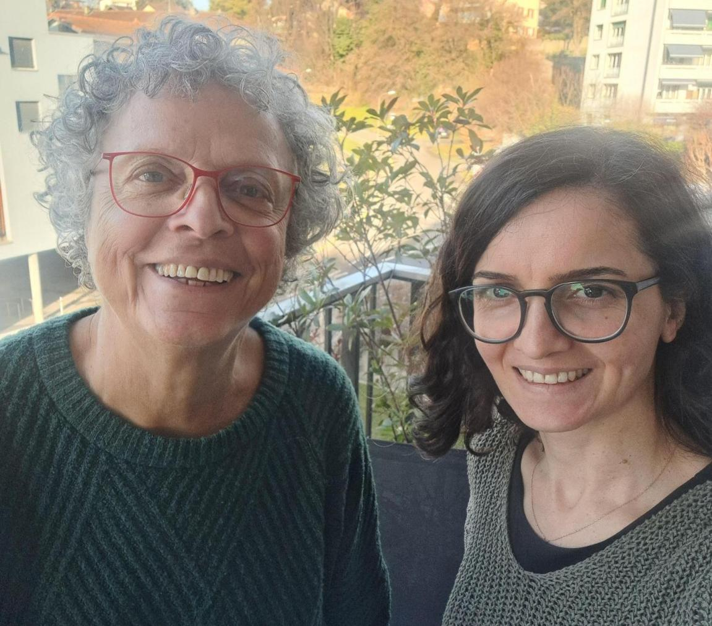

« Ce qui avait commencé comme un simple soutien pour le français est devenu une relation sincère, amicale et familiale avec Arzu, une jeune femme courageuse qui m’apporte autant que je lui transmets. »
Guillaumette · marraine« Ce qui devait être une aide pour apprendre le français est devenu, grâce à Guillaumette, un lien humain profond, fait de confiance, d’affection et de moments précieux que j’attends toujours avec joie. »
Arzu · participante